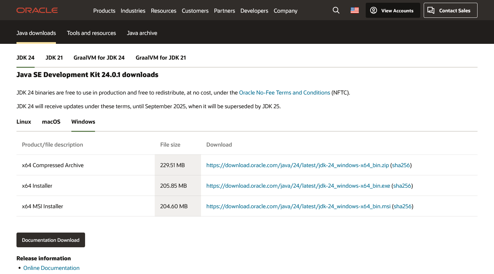
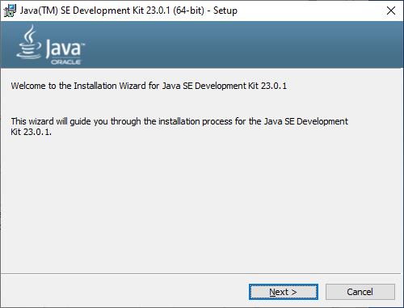
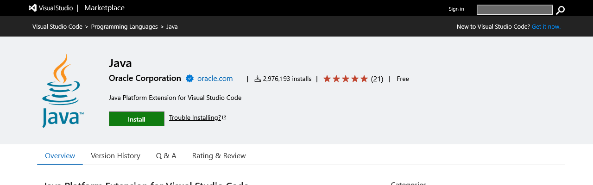
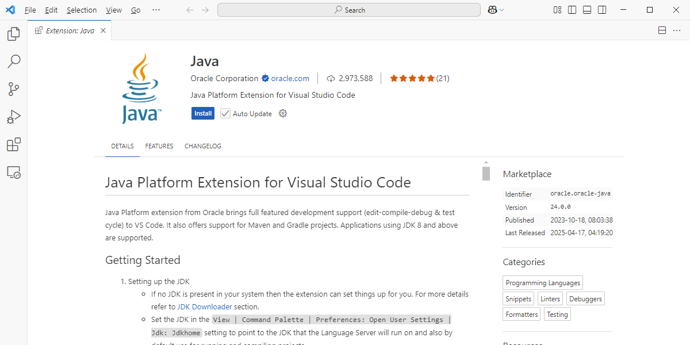
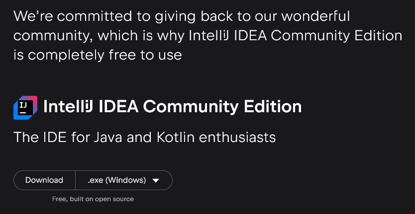
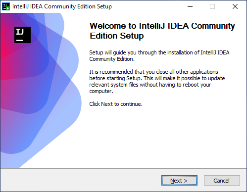
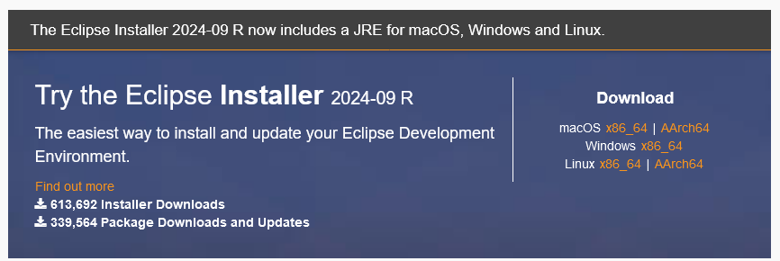
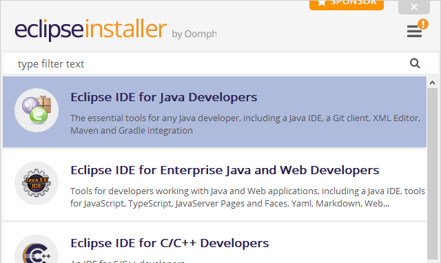
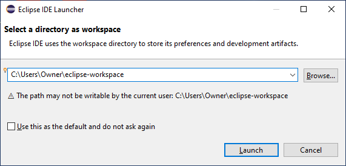
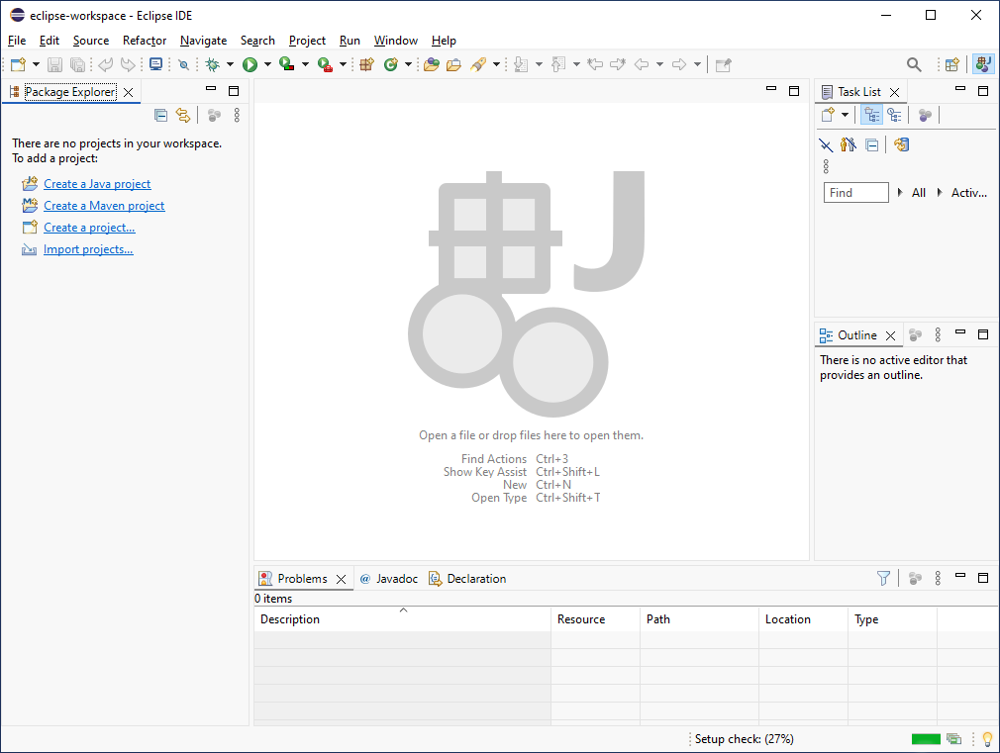

Setting up a Local Java Development Environment
Multiple courses at GRCC require a working knowledge of Java, or (in the case of CIS-117 and CIS-217) teach the concepts of programming using the Java programming language. For the most part, you’ll probably be using zyBooks as a learning platform, and zyBooks provides a browser-based IDE within which you will complete your coursework.
It can be useful at times, either for troubleshooting unexpected results from zyBooks or just to experiment outside of the learning platform, to have the ability to write and execute Java code on your local computer. To that end, we’ll walk you through a few options for installing Java and tools for creating Java projects.
Install a Java Development Kit (JDK)
Java is a “compiled” language, in that it needs to be converted into something called “bytecode” in order to produce an executable program. To compile Java, you will need a Java Development Kit, or JDK. At the moment, there are two major options for acquiring a JDK: Oracle JDK and OpenJDK.
Install Oracle JDK
Most of the time, you’ll install the official JDK from Oracle. Visit the link above, and then scroll down until you see the section labeled Java SE Development Kit XX.X.X downloads (where XX.X.X is the current JDK release version). Click the tab matching your operating system, and then choose an installer. For this article, we’re downloading the x64 Installer for Windows:

Once the download has completed, launch the installer:

The default options are safe to use, so continue clicking Next until the installer begins to install the JDK. Once the installer completes, you will have access to tools for compiling Java code. The installer also installed a Java Runtime Environment, or JRE, which is required for executing your compiled Java code, so (technically) you don’t need anything else.
We’d recommend also installing one or more of the IDEs listed below, as they provide a range of additional tools to make developing in Java much easier.
For a simple example program you can run, to verify that the JDK is installed correctly, see Java Examples - ‘Hello World’.
Install (or Extend) Visual Studio Code
Visual Studio Code (also known as VS Code) is a multi-platform code editor and development environment. It comes with native support for multiple programming languages, and has an extensive ecosystem of free or paid extensions to add support for additional languages or frameworks. To that end, it makes a great tool for learning Java.
If you do not have VS Code installed, you can visit https://code.visualstudio.com/ to download the appropriate version for your operating system:

Once the download has completed, launch the installer. Accept the Terms of Service, and then click Next to bring up the installation options:

The default options are safe to use, so click Next until the installer begins to install VS Code. This will take a few minutes, so please be patient. Once the installer has completed, click Finish.
Next, download the Java extension by visiting https://marketplace.visualstudio.com/items?itemName=Oracle.oracle-java:

Once the download has completed, launch the installer:

This will open the extension in VS Code - click the Install button to install the extension into VS Code. You may be prompted to restart VS Code, after which the extension will be active. There’s a few steps left before you can actively debug Java in VS Code - follow the Getting Started guide on the extension’s page to finish your setup.
Install IntelliJ
Another great option for developing in Java is IntelliJ, an integrated development environment, or IDE, from JetBrains. IntelliJ is an IDE focused on Java and Java-based frameworks, and is probably the best choice for complex projects.
IntelliJ has both a Pro (paid) version, and a Community (free) edition. We’d recommend the Community Edition. Visit https://www.jetbrains.com/idea/download and then scroll down until you see IntelliJ IDEA Community Edition:

Once the download has completed, launch the installer:

The default options are safe to use, so click Next until the installer begins to install IntelliJ. This will take a few minutes, so please be patient. Once the installer has completed, click Finish (choose Reboot now if you want to immediately restart your computer).
Install Eclipse IDE
Eclipse is probably one of the oldest continually-maintained IDEs available for Java development, but don’t hold that against it - it’s a fully modern IDE and is an excellent choice as both a learning tool and something you can (and probably will) continue to use as a professional Java developer.
Visit https://www.eclipse.org/downloads/packages/ to download Eclipse:

Once the download has completed, launch the installer:

From the list, select Eclipse IDE for Java Developers. The default options are safe to use, so click Install. This will take a few minutes, so please be patient. Once the installer has completed, click Launch.
When starting up, Eclipse will prompt for a workspace:

A workspace is basically a virtual desk for Java development - whatever settings you configure in Eclipse are saved to this workspace and applied each time the workspace is selected. This lets you configure multiple workspaces, according to the needs of the tasks on which you are working.
Once a workspace is selected, you’ll be in the Eclipse version of a start page:

The Wrap Up
That’s it! You now have up to four new tools with which to experiment. Have fun!